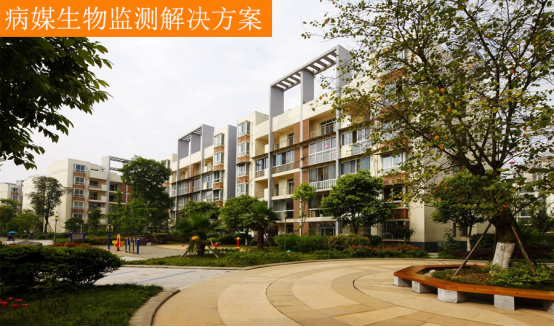

病媒生物监测
发布时间：2021-06-21 22:40浏览次数：
病媒生物：能通过生物或机械方式将病原生物从传染源或环境向人类传播的生物，主要包括节肢动物中的蚊、蝇、蜚蠊、蚤、蜱、螨、虱、蠓、蚋等，及啮齿动物的鼠类。危害着我们的健康，也就意味着病媒生物监测是非常重要的，在这里小编分享帮帮对病媒生物监测解决方案。
一、鼠类孳生地调查、密度监测的控制方法
1、鼠类孳生地调查：
对服务区域内鼠类栖息场所调查：公共环境“八小”行业宅边、农贸市场周边、绿化带、垃圾堆放处、窨井窨缸、下水道出口等处，定期进行鼠迹调查，以目测法查找鼠迹（鼠洞、鼠道、鼠粪、鼠足迹、鼠咬痕等），并定期走访社区居民了解鼠情，掌握鼠害、鼠活动规律。

2、鼠密度监测的控制方法：
采用夹捕法对服务区内的鼠种、 鼠密度进行定期监测。服务区按东、 南、 西、 北、 中五个方位各设一个鼠密度监测点。
有效夹数=布夹总数-无效夹数
（无效夹是指丢失或不明原因击发的鼠夹）。
3、鼠密度考核：
采用粉剂法对作业区进行鼠密度考核，由公司质检部负责实施。方法：服务区按东、南、西、北、中五个方位各设一个鼠密度监测点，选一楼住宅梯下、车库、杂房及空置房等，沿墙脚或墙角，定期、定点布放均匀厚度石粉块，翌晨查验鼠迹，记录阳性的粉块数和有效的粉块数。以鼠迹阳性粉块的百分比表示鼠密度（%）。
|
鼠密度计算：粉迹法阳性率（%）= |
阳性粉块数 |
X100 |
|
有效粉块数 |
二、蟑螂孳生地调查、密度监测的控制方法
1、蟑螂孳生地调查：
对服务范围内蟑螂孳生场所进行调查：重点是公共环境（公共休闲房、无人居住空房、杂房、垃圾房、厕所及下水道出口等）的蟑卵鞘和蟑螂成、若虫进行调查，并定期向居民和保洁员了解蟑情，撑握蟑螂孳生繁殖规律。
2、密度监测的控制方法：
①目测法’蟑密度检测：
公共环境（公共休闲房、无人居住空房、杂房、垃圾房、厕所及下水道出口等）目测查找蟑迹（蟑螂粪便、蜕皮、空卵鞘壳、蟑尸等）蟑卵荚和蟑螂成、若虫，以阳性处（间）数的百分比（%）来确定蟑害程度，蟑（成、若虫）、卵荚、蟑迹分别计算阳性率（%）。
②“药激法”蟑密度检测：
用0.3%氯菊酯酒精液对蟑螂栖息场所进行喷洒。
三、蚊类孳生地调查、密度监测的控制方法
1、蚊类孳生地调查：
对作业区进行全面的蚊类孳生地调查：窨井、水沟、电缆井、池塘、大型水体、景观水池、楼房挡雨板、废旧轮胎、堆积缸罐等调查，摸清区域内蚊类孳生地的类型和数量。并定期向居民了解蚊情，撑握蚊子孳生规律。
2、密度监测的控制方法
①蚊幼密度监测
1.1‘勺捞法’检查蚊幼：对辖区内溪流（流速缓慢的）、公园中湖泊、死水塘等大、中型水体，用500毫升的1.5米左右长柄勺，沿岸边缘及1米以内采水样，每5-10米各采水一勺，查蚊幼孳生情况，水样中有蚊幼或蚊蛹时，计算阳性勺平均蚊幼、蚊蛹只数（密度）和阳性率。
1.2‘目测法’检查蚊幼：对辖区公共环境中的各类容器积水及窨井、窨缸、沟渠、排水沟、蓄水池、露天水缸、景观水体等小型水体，目测进行检查，如窨井或下水道口深而暗时，则用长柄勺沿壁采出水样检查，记录积水处数、方位和蚊幼的阳性处数，不计虫数。
②成蚊密度测定：
1、“人工小时法”成蚊密度测定：服务区按东、南、西、北、中五个方位各设一个蚊密度监测点，用电动吸蚊器捕捉成蚊，选服务区室内空房屋、公共休闲房、公共车库、管理用房等。
2、“人诱法”成蚊密度监测：选定测定点（居住点外环境），白天测定人员静坐暴露胳膊和小腿诱蚊30分钟，检测诱获成蚊只数及蚊种。
四、蝇类孳生地调查、密度监测的控制方法
1、蝇类孳生地调查：
对服务区环境中的蝇类孳生情况调查：重点是农贸市场周边、八小行业外围、垃圾箱、果壳箱、生活垃圾堆放场（点）、污物(泔水)桶、绿化松土带以及简易棚侧、粪缸、禽畜棚圈周边等蝇类孳生场所进行调查。并定期向居民了解蝇情，撑握蝇类活动规律。
2、密度监测的控制方法
①蝇蛆密度监测
在选定的监测点，用小铁铲挖查孳生物表层，查孳生物中蝇蛆、蝇蛹，记录阳性处所，计算阳性率，以判断蝇幼的发生率及阳性率（%）。
②成蝇密度测定：
在服务区内，按东、南、西、北、中设五处固定监测点，选择重点行业周边和住宅区绿化带，用笼诱法诱捕，监测成蝇密度。
诱饵：为红糖食醋饵（按《全国病媒生物监测方案》蝇监测诱饵配置方法）
记录监测当天的天气情况分析出当时、当地的优势种群，并制作季节消长图标，掌握蝇密度动态，为灭蝇工作提供依据。
以上是小编分享病媒生物监控解决方案的相关内容，想了解更多内容请拨打网站上方全国热线，有工作人员为您服务。

 扫一扫 关注我们
扫一扫 关注我们